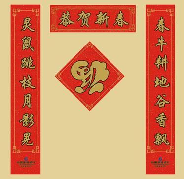

Happy New Year in the East
I am always happy this time of year to hear from my far eastern colleagues about the biggest Chinese festival of the year, the Spring Festival and Chinese New Year. Here is calligraphy on this year's celebration that we received from Joe Ye:

Barbara Han and others provided the following explanation and rough translations:
Left
Field mouse jumps between the branches,
and makes the shadow of the moon wobble.
Right
Spring ...
An ox ploughing the field ...
Nice smell fills the valley.
These poems describes the winter mouse, meaning the last year, and the springtime ox, meaning this year.
Middle
The middle horizontal line says Happy New Year.
The middle character is 'Good luck' and is upside down. There is a meaning to this as well, about the good luck coming to you, and not going after it or holding on:
The middle character means good luck, good fortune, happiness, and so on, and its pronunciation is 'Fu'. Why is this character upside down? That is because the pronunciation of 'upside down' is 'Dao le' in Chinese, which is the same as another character meaning arriving, reaching, so when a guest enters your home and sees the poem, they might say 'oh, Fu Dao le', which sounds like 'good luck reaching your home', which are perfect words for you.
I hope you enjoy and appreciate this as much as I do. Happy New Year, good luck letting go, and good new beginnings every day and every moment!